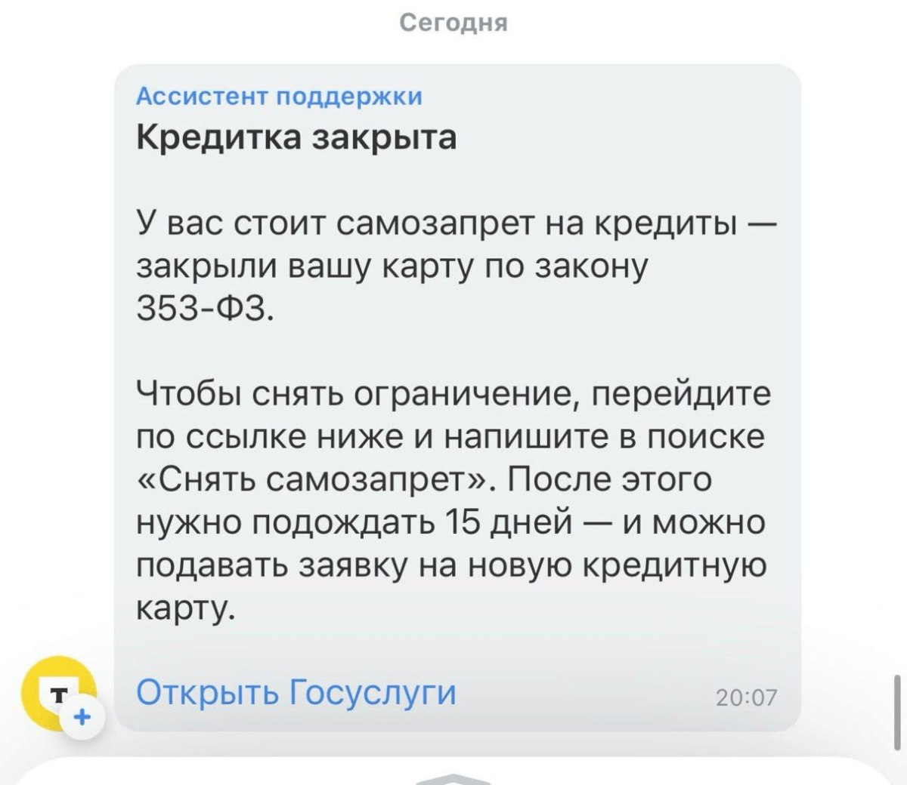

Анонимные Telegram-каналы 5 марта 2025 года распространили информацию о том, что россиянам, которые подключили самозапрет на кредиты, «начали закрывать действующие кредитные карты».
В «Т-Банке» заявили, что под закрытие могут попасть только неактивированные кредитки — по которым не проводилось расходных операций
vc.ru/money/1847585

2025年3月5日，匿名电报频道传播信息称，连接自我贷款禁令的俄罗斯人开始关闭他们现有的信用卡。 T-Bank表示，只有未激活的信用卡才能被关闭，因为没有借记交易 vc.ru/money/1847585


 | Avalanche caught on camera in Sarbal area of Jammu and Kashmir's Sonamarg. No casualties were reported.
| Avalanche caught on camera in Sarbal area of Jammu and Kashmir's Sonamarg. No casualties were reported.
 In his first major address to the Congress since returning to the White House, President Donald Trump criticised Biden’s policies, championed tariffs, and more! Here are 10 key takeaways from his speech
In his first major address to the Congress since returning to the White House, President Donald Trump criticised Biden’s policies, championed tariffs, and more! Here are 10 key takeaways from his speech 
 India, China, EU, Brazil, Mexico, and Canada to face new tariffs from April 2025
India, China, EU, Brazil, Mexico, and Canada to face new tariffs from April 2025

 Steve Smith Retires from ODI Cricket
Steve Smith Retires from ODI Cricket 

 Donald Trump announced that there would be no tax on cars, provided they are manufactured in America, while highlighting how India charges the United States tariffs on the auto sector.
Donald Trump announced that there would be no tax on cars, provided they are manufactured in America, while highlighting how India charges the United States tariffs on the auto sector.


 “The fentanyl issue is a flimsy excuse to raise US tariffs on Chinese imports”, China hit back at US president Donald Trump. “If war is what the US wants, be it a tariff war, a trade war or any other type of war, we’re ready to fight till the end”, Beijing vowed.
“The fentanyl issue is a flimsy excuse to raise US tariffs on Chinese imports”, China hit back at US president Donald Trump. “If war is what the US wants, be it a tariff war, a trade war or any other type of war, we’re ready to fight till the end”, Beijing vowed.
 Zepto CEO Aadit Palicha called out Zomato CEO Deepinder Goyal that the quick commerce giant is losing ₹250 crore per quarter. Palicha took to LinkedIn and refuted Goyal's statement.
Zepto CEO Aadit Palicha called out Zomato CEO Deepinder Goyal that the quick commerce giant is losing ₹250 crore per quarter. Palicha took to LinkedIn and refuted Goyal's statement. 


 Remember DOGE chief Elon Musk landing in a soup and facing resistance from Republicans, when he sent out a mail asking US Federal workers to list out their achievements in a weekly report. There's an Indian version of it!
Remember DOGE chief Elon Musk landing in a soup and facing resistance from Republicans, when he sent out a mail asking US Federal workers to list out their achievements in a weekly report. There's an Indian version of it!

 The Supreme Court criticized state governments for failing to provide affordable medical care and essential drugs, noting that this has led to the rise of private hospitals. The court emphasized that states must ensure adequate healthcare services and regulate medicine prices effectively.
The Supreme Court criticized state governments for failing to provide affordable medical care and essential drugs, noting that this has led to the rise of private hospitals. The court emphasized that states must ensure adequate healthcare services and regulate medicine prices effectively.
 Find out now
Find out now  Nifty 50 Drops 16% from Record High
Nifty 50 Drops 16% from Record High
 Here's a round-up of property announcements today in Parliament:
Here's a round-up of property announcements today in Parliament: From an NTU eatery to 7 outlets, A Hot Hideout spices up Singapore’s mala scene
From an NTU eatery to 7 outlets, A Hot Hideout spices up Singapore’s mala scene :
: 
 Trump says Canada, Mexico tariffs to take effect on Tuesday; stocks tumble
Trump says Canada, Mexico tariffs to take effect on Tuesday; stocks tumble